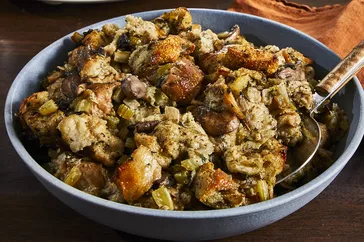

Slow Cooker Stuffing

Description
This crockpot stuffing is an easy way to make extra stuffing for a large crowd — and it frees up stove space because it cooks in a slow cooker. This recipe is designed for use in a standard 4-quart slow cooker and is very tasty and moist!
Ingredients
- Butter: This slow cooker stuffing recipe starts with vegetables sautéed in butter.
- Vegetables: You'll need onions, celery, and mushrooms.
- Parsley: Fresh parsley adds a pop of color and flavor.
- Bread: Opt for slightly stale bread cut into cubes.
- Spices and seasonings: This slow cooker stuffing is flavored with salt, dried sage, poultry seasoning, dried thyme, dried marjoram, and ground black pepper.
- Broth: Use store-bought or homemade chicken broth.
- Eggs: Whole eggs lend moisture and help hold the stuffing together.
Steps
- Melt butter in a skillet over medium heat. Cook and stir onion, celery, mushroom, and parsley in butter until slightly softened, 5 to 8 minutes.
- Place bread cubes in a very large mixing bowl. Spoon cooked vegetables over bread cubes. Season with salt, sage, poultry seasoning, thyme, marjoram, and pepper. Pour in enough broth to moisten, then mix in eggs. Transfer mixture to a slow cooker.
- Cover and cook on High for 45 minutes, then reduce heat to Low and cook for 4 to 8 hours.